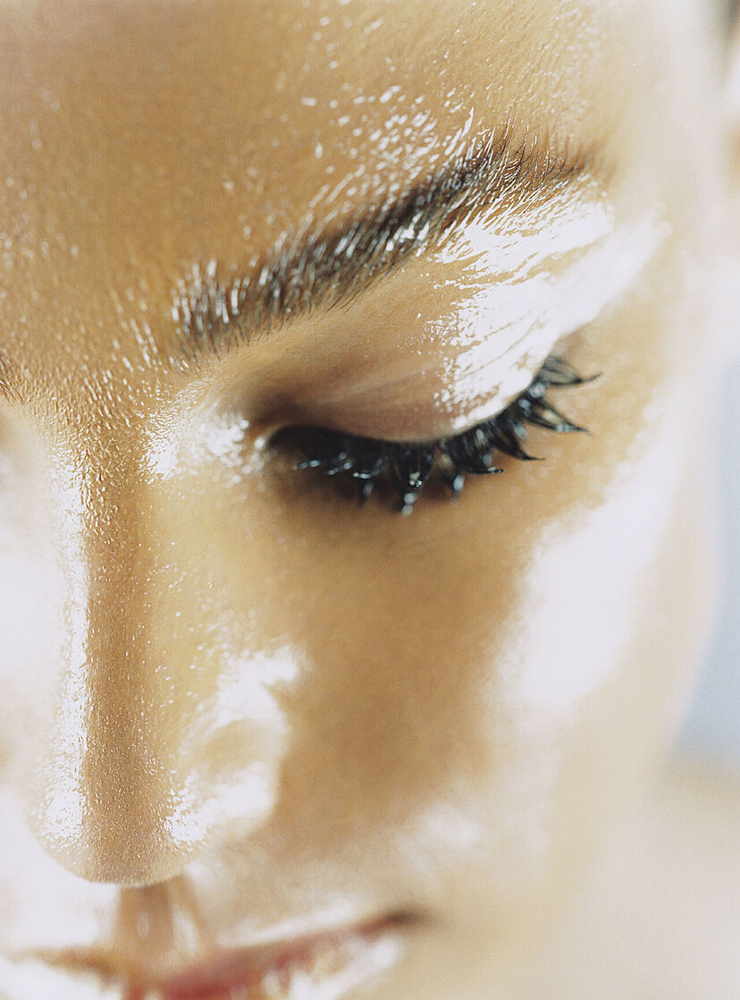
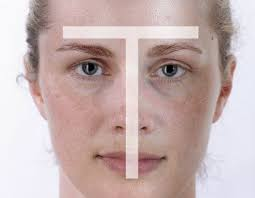
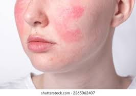
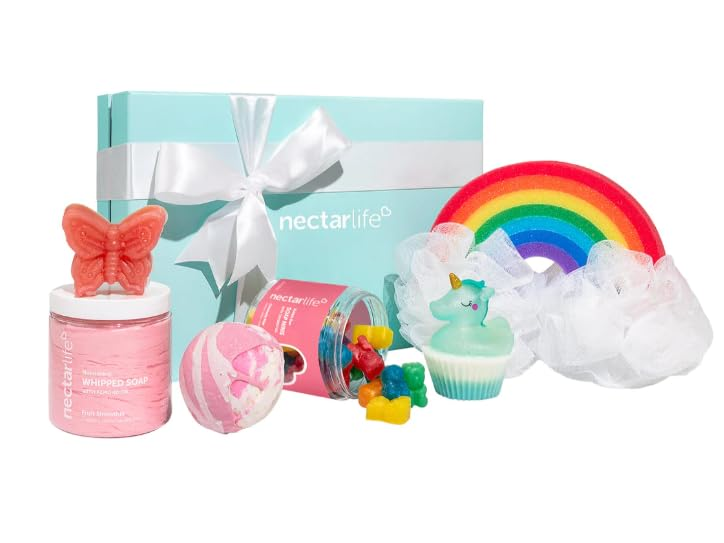
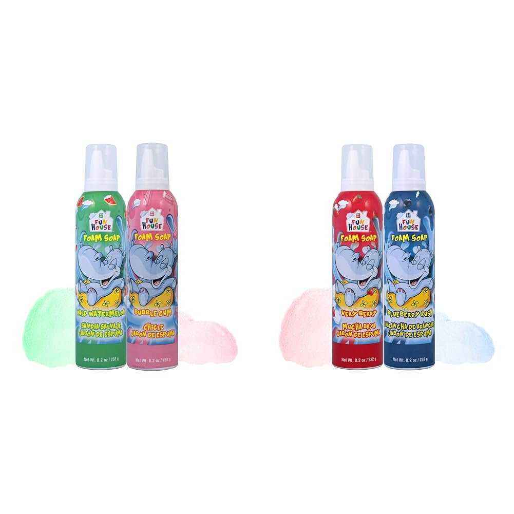
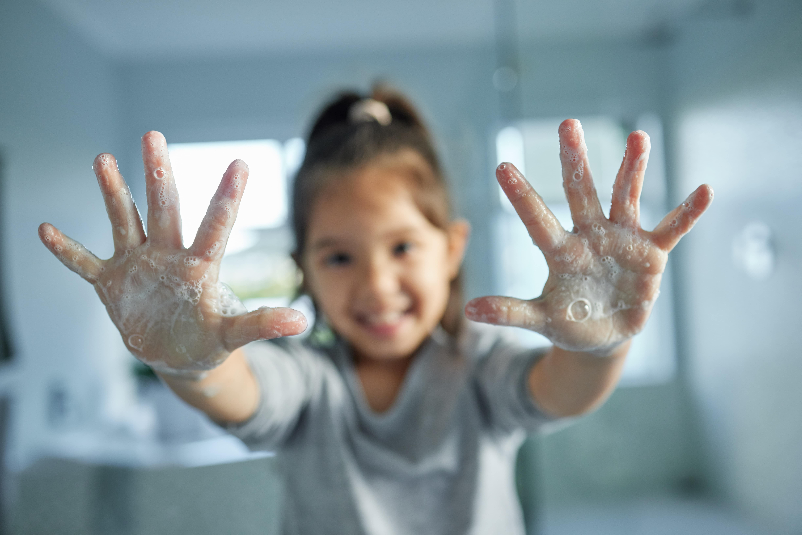

Inicio
Bienvenido a nuestra pagína web. Aquí encontraras toda la información que necesitas para entrar en el mundo de lo artesanal.
"El toque artesanal que tu piel amará."

La calidad artesanal que se siente en cada uso.
Beneficios
Ingredientes naturales: Los jabones artesanales suelen estar hechos con ingredientes naturales como aceites vegetales, hierbas, flores y aceites esenciales. Esto significa que son más suaves para la piel y menos propensos a causar irritación o alergias.

Hidratación: A diferencia de los jabones comerciales, que a menudo eliminan los aceites naturales de la piel, los jabones artesanales conservan la glicerina, un humectante natural que ayuda a mantener la piel hidratada y suave.

Respetuosos con el medio ambiente: Al estar hechos con ingredientes naturales y procesos de producción más sostenibles, los jabones artesanales suelen ser más amigables con el medio ambiente que los jabones comerciales.

Experiencia sensorial: Usar un jabón artesanal puede ser una experiencia sensorial placentera, gracias a sus aromas naturales y texturas suaves.

Personalización: Algunos productores de jabones artesanales ofrecen la opción de personalizar los jabones con tus ingredientes o aromas favoritos.

Clasificación y diseños
Formas y figuras
Moldes: Utiliza moldes de silicona con diferentes formas: flores, animales, corazones, estrellas, etc.
Cortadores: Corta el jabón en barras o cubos y luego usa cortadores de galletas para crear formas divertidas.
Incrustaciones: Incrusta pequeños objetos en el jabón, como flores secas, hierbas, conchas marinas o incluso pequeños juguetes.
Colores y texturas:
Colorantes naturales: Utiliza colorantes naturales como arcillas, especias o extractos de plantas para darle color al jabón.
Capas: Vierte capas de jabón de diferentes colores para crear un efecto degradado o de arcoíris.
Remolinos: Crea remolinos de color mezclando diferentes tonos de jabón antes de que se endurezca.
Texturas: Agrega ingredientes como avena, semillas o sales marinas para darle textura al jabón.
Aromas y diseños temáticos:
Aromaterapia: Combina aceites esenciales con diseños temáticos, por ejemplo, jabones de lavanda con forma de luna para relajarse o jabones cítricos con forma de sol para energizarse.
Jabones para niños: Crea jabones con formas de personajes de dibujos animados o animales y aromas frutales.
Jabones para ocasiones especiales: Diseña jabones para regalar en bodas, cumpleaños o Navidad, con formas y aromas que reflejen la ocasión.
Técnicas de diseño:
Jabón de adoquines: Esta técnica consiste en cortar el jabón en pequeños cubos y luego colocarlos en un molde para crear un diseño de mosaico.
Jabón de remolino: Esta técnica consiste en mezclar diferentes colores de jabón en un movimiento circular para crear un diseño de remolino.
Jabón moldeable: Esta técnica consiste en utilizar un jabón especial que se puede moldear como plastilina para crear formas tridimensionales.

Según sus ingredientes:
Jabones de aceites vegetales: Son los más comunes y se elaboran con aceites como el de oliva, coco, palma o almendras.
Jabones de glicerina: La glicerina es un humectante natural que ayuda a mantener la piel hidratada.
Jabones de hierbas y plantas: Contienen extractos de hierbas y plantas con propiedades terapéuticas, como la lavanda, la caléndula o la manzanilla.
Jabones de leche: Se elaboran con leche de cabra, vaca o burra, que aporta suavidad y nutrición a la piel.
Según su proceso de elaboración:
Jabones de proceso en frío: Se elaboran mezclando los aceites con una solución de hidróxido de sodio a temperatura ambiente.
Jabones de proceso en caliente: Se elaboran calentando los aceites y la solución de hidróxido de sodio, lo que acelera el proceso de saponificación.
Jabones refundidos: Se elaboran derritiendo jabones ya elaborados y añadiendo nuevos ingredientes, como colorantes, aromas o hierbas.
Según sus propiedades:
Jabones hidratantes: Contienen ingredientes que ayudan a mantener la piel hidratada, como la glicerina, el aceite de oliva o la manteca de karité.
Jabones exfoliantes: Contienen ingredientes que ayudan a eliminar las células muertas de la piel, como la avena, el azúcar o las semillas.
Jabones terapéuticos: Contienen ingredientes con propiedades medicinales, como el aceite de árbol de té para el acné o la caléndula para la piel irritada.
Jabones para pieles sensibles:Están formulados con ingredientes suaves y naturales que no irritan la piel.

Tipos de piel
Piel Normal:
Este tipo de piel es equilibrado, no es ni muy seca ni muy grasa. Los jabones artesanales con ingredientes como aceite de oliva, aceite de coco o manteca de karité son ideales para mantener la hidratación y suavidad de la piel.

Piel Seca:
Este tipo de piel tiende a sentirse tirante y áspera. Los jabones artesanales con ingredientes como aceite de almendras, aceite de aguacate o manteca de karité son excelentes para nutrir e hidratar la piel en profundidad

Piel Grasa
Este tipo de piel produce un exceso de sebo, lo que puede causar brillo y acné. Los jabones artesanales con ingredientes como aceite de árbol de té, carbón activado o arcilla verde ayudan a limpiar los poros, controlar el exceso de grasa y prevenir el acné.
Piel Mixta:
Este tipo de piel tiene áreas secas y grasas. Los jabones artesanales con ingredientes como aceite de jojoba, aceite de lavanda o aloe vera son ideales para equilibrar la piel y tratar ambas zonas.
Piel Sencible:
Este tipo de piel reacciona fácilmente a los productos químicos y fragancias. Los jabones artesanales con ingredientes como manzanilla, caléndula o avena son suaves y calmantes para la piel sensible.
Jabones para niños
Jabones en barra:
Los jabones en barra son una opción clásica para los niños. Busca jabones en barra que estén hechos con ingredientes suaves y que tengan formas y colores divertidos.
Jabones liquidos:
Los jabones líquidos son otra opción popular para los niños. Son fáciles de usar y suelen ser menos irritantes que los jabones en barra.
Jabon para el cabello y el cuerpo:
Los jabones para el cabello y el cuerpo son una opción conveniente para los niños. Son suaves y delicados y se pueden usar tanto para el cabello como para el cuerpo.
